PYTHON Extract Transform Load (ETL) Project
Introduction
In the evolving landscape of data-driven decision-making, the ability to efficiently manage and process vast amounts of information is crucial. The Extract, Transform, Load (ETL) task, at its core, embodies this necessity. ETL processes are pivotal in data warehousing, serving as the backbone for data integration from multiple sources, cleaning, and restructuring, ensuring that data is actionable and meaningful.

This task's relevance becomes even more pronounced in the context of modern businesses, where data is not just a resource but a foundational element of strategy and operations. It allows organizations to harness diverse data types, ranging from structured formats like CSV and JSON to more complex types like XML. By extracting data from these varied sources, transforming it into a coherent structure, and then loading it into a database or data warehouse, ETL empowers businesses to derive insights that drive growth, innovation, and competitive advantage.
In the scope of this project, the ETL task was approached with a focus on Orchid Tech Innovations Ltd., a company poised at the intersection of technological advancement and global expansion. The task was not just an exercise in technical skill but also a practical application of learnings from the module workshops. Each phase of the ETL process – extraction, transformation, and loading – was infused with insights gained from these workshops. They provided a theoretical underpinning that guided the practical application of Python programming for data handling.
Python, chosen for its versatility and robustness in data manipulation, played a pivotal role in this project. Its libraries and tools offer seamless interaction with different data formats and powerful capabilities for data cleaning and transformation. The Python code developed for this task was more than just a set of instructions; it was a reflection of a strategic approach to data handling, embodying best practices and innovative solutions.
This ePortfolio, a pivotal component of this project, serves as a dynamic canvas to document and reflect on the journey through the ETL task. It's not just a repository of completed work; it's an evolving narrative that showcases the process, challenges, and solutions encountered along the way. This documentation is crucial for personal development, allowing for introspection and a deeper understanding of the practical applications of data management. It also acts as a tangible demonstration of skills and knowledge, bridging the gap between academic learning and real-world application, making it an invaluable tool for both personal and professional growth.

Data Extraction Process
The initial phase of the ETL task involved the extraction of data from three distinct file formats: CSV, JSON, and XML. This stage was crucial for understanding the nature of the data Orchid Tech Innovations Ltd. was dealing with. The first step, listing the first record from each file, provided valuable insights into the data structure. It highlighted the columns present and gave a glimpse into a sample record from each file type. This action served as a foundational step, aligning with the workshop learnings about data assessment and initial parsing techniques.
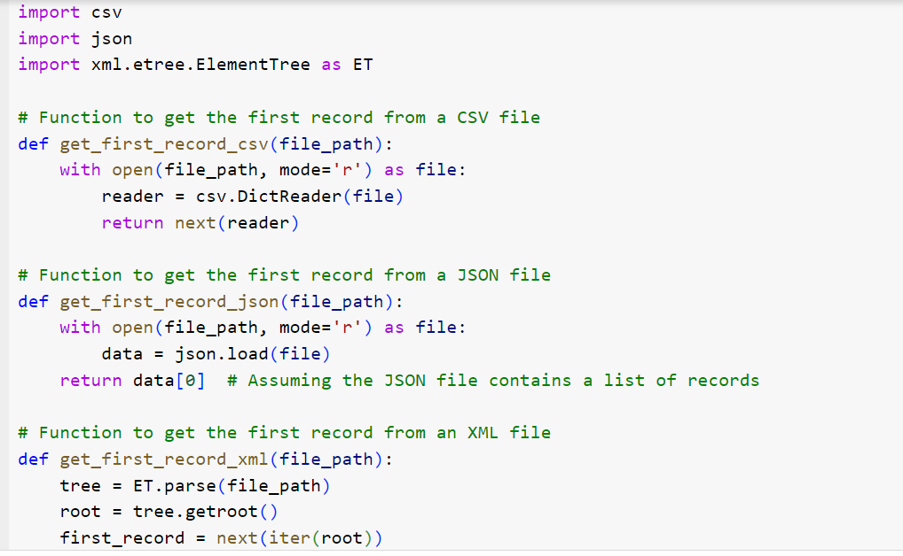 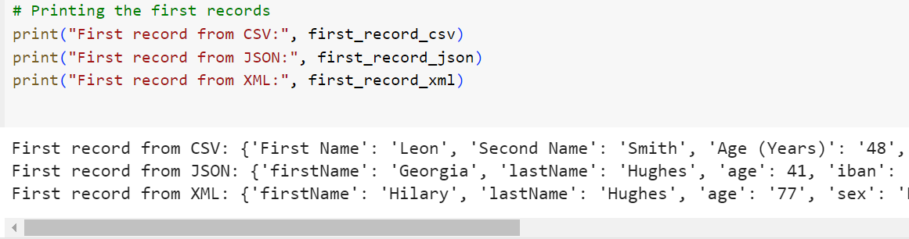In the second step of data transformation, data types for each column in the first three records of the CSV, JSON, and XML files were determined using Python. This was achieved by employing regular expressions and Python's type-checking capabilities within a custom function 'determine_data_type'. The function scrutinized each value, classifying them into data types like 'int', 'year', 'date', 'float', 'bool', 'varchar', or 'text'. A major challenge encountered was accurately categorizing data types due to varying formats across files, requiring precise regex patterns and logical checks to ensure correct classification.
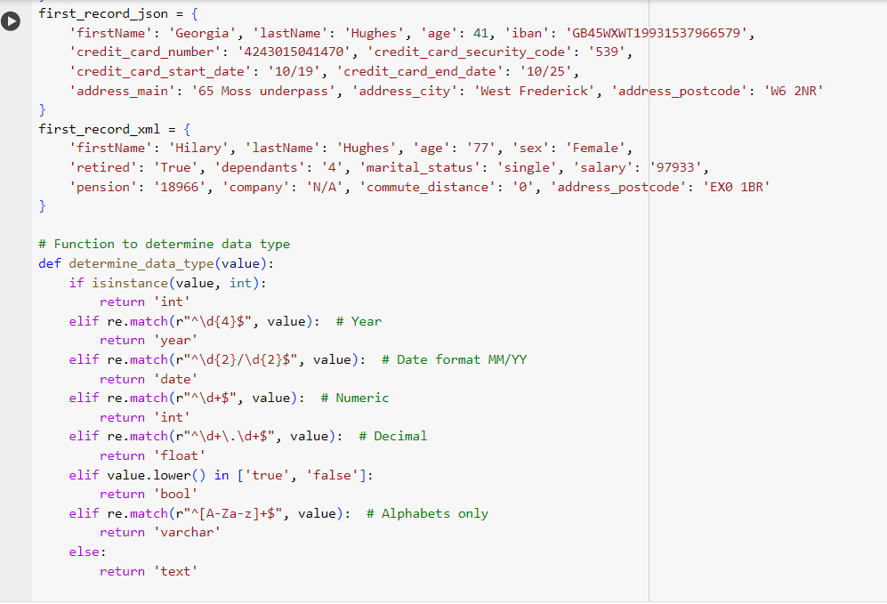 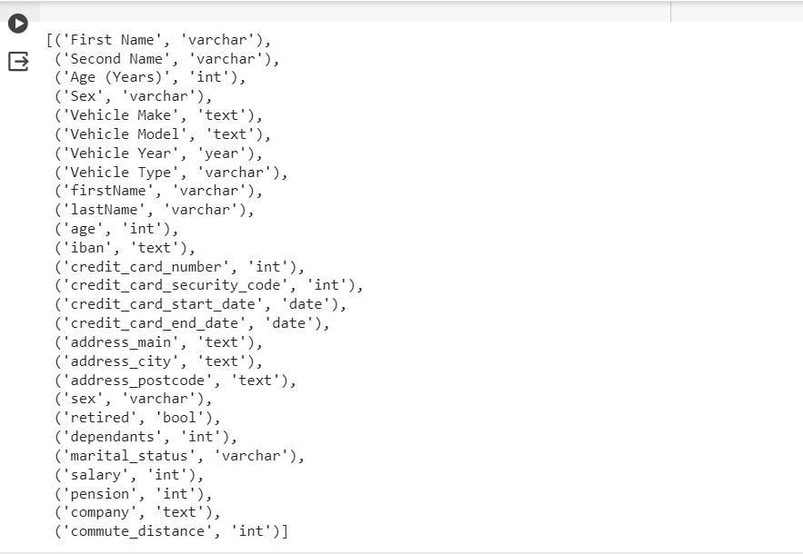In the extraction phase, I manually extracted meaningful data from a text file by identifying key elements such as names and amounts. These identifiers were carefully chosen for their relevance to the columns in the CSV, JSON, and XML files. This meticulous process involved noting down necessary changes dictated by the text data for later application in the data files. The extracted information was then organized systematically, setting the stage for its effective integration in subsequent stages of the ETL process. This preparation was crucial for ensuring a smooth and accurate data handling workflow.
During the manual extraction from the text file, challenges included accurately identifying relevant data amidst unstructured text and ensuring alignment with the structured data in CSV, JSON, and XML files. This task was complicated by variations in data presentation and potential discrepancies between the text file and structured data sources. The resolution involved a meticulous review and cross-referencing process, ensuring the extracted data such as names and amounts matched the corresponding fields in the data files. This careful approach was critical for accurate data alignment in the ETL process.
In summary, the extraction phase was a blend of practical Python skills and the application of theoretical knowledge gained from workshops. It laid a strong foundation for the subsequent stages of the ETL task and demonstrated the value of a comprehensive understanding of data types and structures. This phase set the stage for the transformative processes that would follow, ensuring that the data was not only extracted but also primed for the next steps in the data handling pipeline.
Data Loading and Integration
Podcasting operational change management inside of workflows to establish a framework. Taking seamless key performance indicators offline to maximise the long tail. Keeping your eye on the ball while performing a deep dive on the start-up mentality to derive convergence on cross-platform integration.
Web Design Intern
Collaboratively administrate empowered markets via plug-and-play networks. Dynamically procrastinate B2C users after installed base benefits. Dramatically visualize customer directed convergence without revolutionary ROI.
Data Transformation process
The transformation phase of the ETL process was a multifaceted and intricate endeavor, crucial for ensuring the data's usability and integrity. The first step involved transforming XML data into a CSV format, enabling uniformity across different data types. This step was pivotal as it set the stage for further standardization and integration processes.
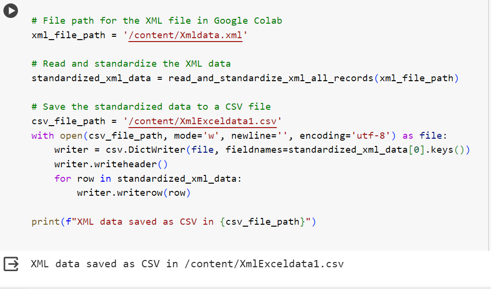Standardizing the data across the three file types (CSV, JSON, XML) was a critical step, involving the alignment of column names and data formats. A notable example was standardizing different variations of the 'firstname' column to a uniform 'First Name' across all files. This meticulous process ensured consistency, which is vital for accurate data analysis and integration. This aligns with the principles learned in the workshops, emphasizing the importance of data uniformity for effective processing and analysis.
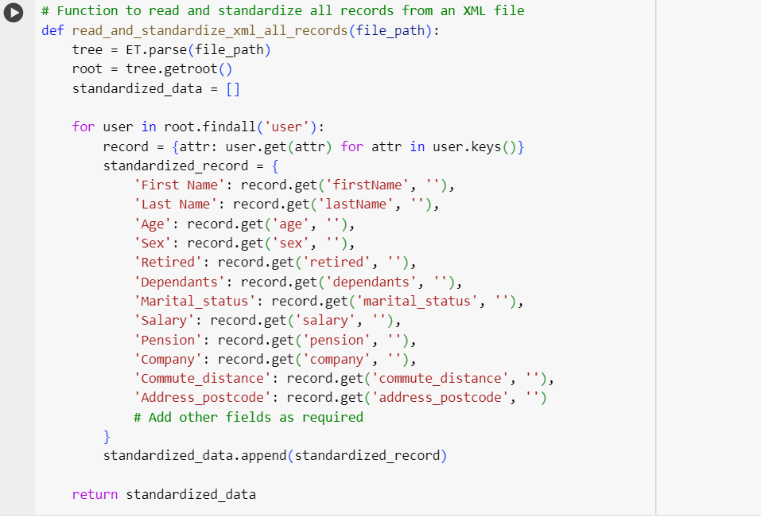 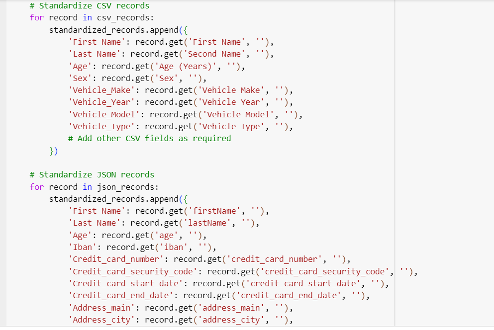Combining data into one CSV file was a crucial step in the ETL process. After standardizing the data across CSV, JSON, and XML files, I employed Python scripts to effectively merge them into a single CSV file. This process involved reading and standardizing each file's data, ensuring uniformity in field names and data types. I then amalgamated these records into a consolidated dataset, meticulously managing fieldnames to avoid duplication. Finally, this unified dataset was written into a new CSV file, 'FinalCombinedData.csv', marking a significant milestone in creating a comprehensive, integrated data source. This step was instrumental in simplifying subsequent ETL tasks.
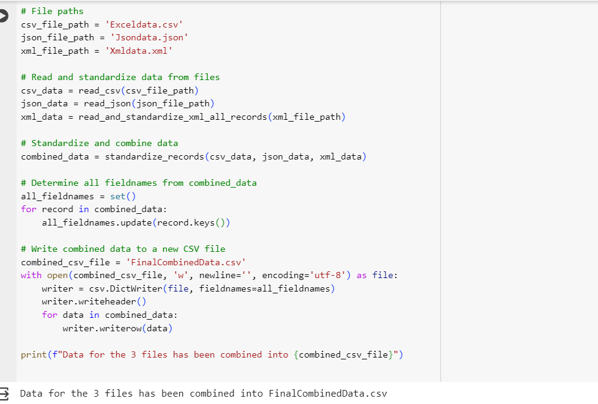The subsequent challenge was dealing with disorganized and duplicate records. To address this, a Python script was written to identify and organize duplicate records in a new CSV file. This step was particularly challenging due to the need to balance between removing duplicates and preserving complete data records. For instance, in cases where two duplicate records contained different pieces of information across columns, it was essential to merge these records into one, ensuring no data loss. This approach of handling duplicates was not only a technical exercise but also a strategic decision-making process, mirroring scenarios often discussed in the workshops.
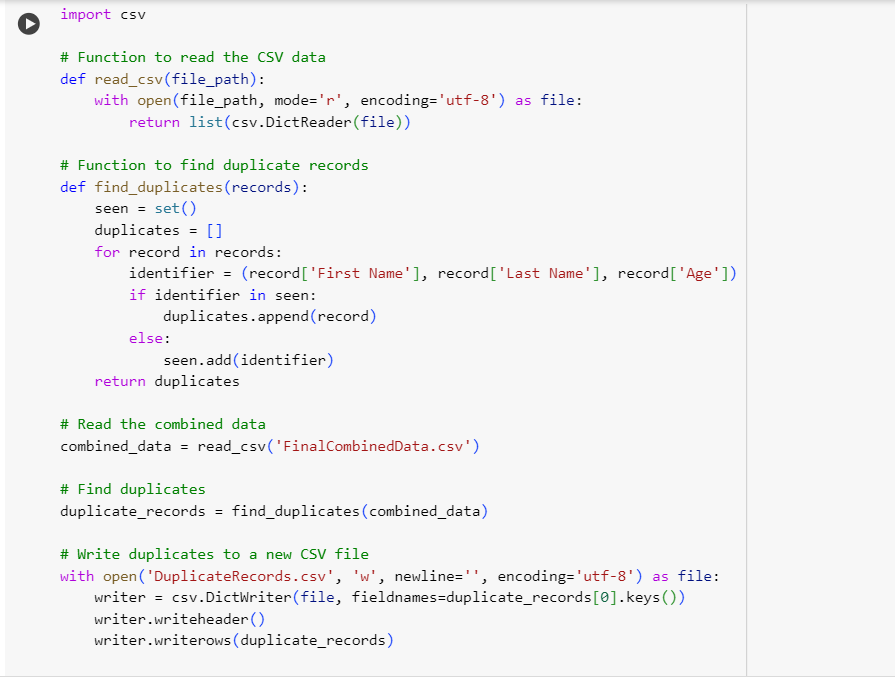 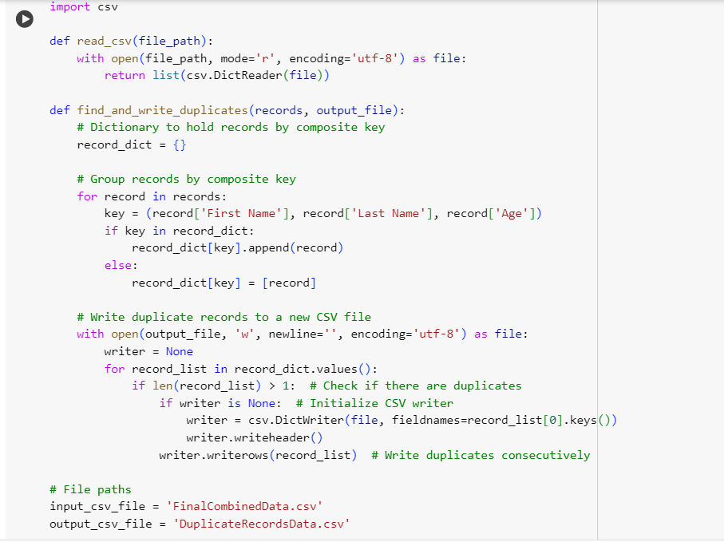The cleaning process extended to tidying up the combined CSV file. This involved refining the data to ensure its cleanliness and readiness for analysis, a process that resonates with the data quality management strategies explored in the workshops. Ensuring data quality is a critical aspect of the ETL process, as it directly impacts the reliability of the data insights derived.
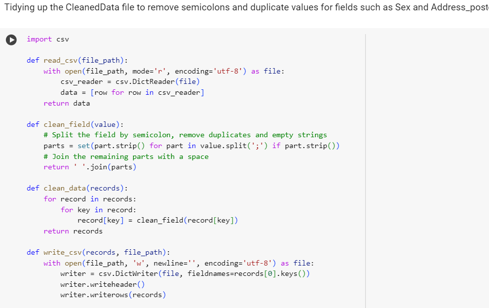 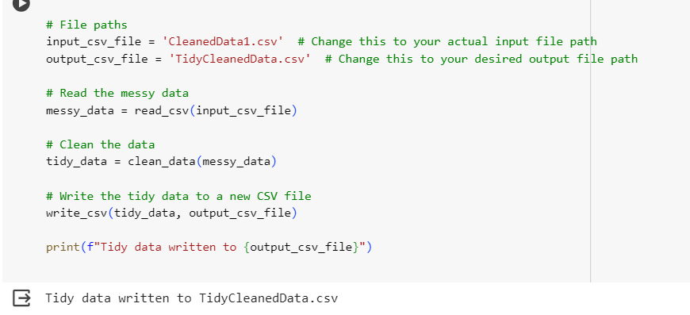Furthermore, the task involved fetching specific records that correlated with textual data from separate files. This step required manual analysis to identify key identifiers such as names and dates in the text files, which were then used to locate and modify the corresponding records in the CSV file. The precision and attention to detail required in this phase were substantial, reflecting the complex nature of real-world data handling, a theme recurrent in the workshops.
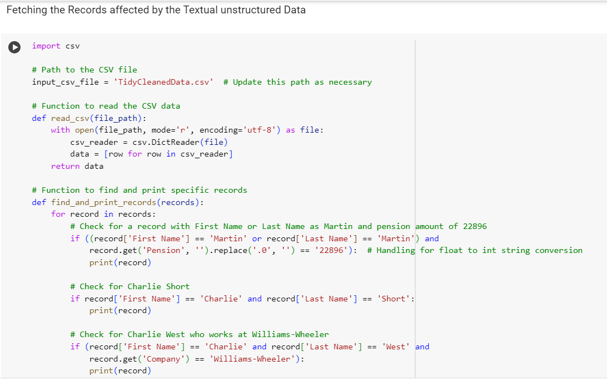Updating records as per instructions from textual data involved a targeted approach using Python. The process started by reading data from 'TidyCleanedData.csv', followed by specific updates like modifying pensions, ages, salaries, and security codes based on defined criteria. Challenges included accurately identifying the correct records for updates and ensuring data integrity post-modification. These were addressed by implementing conditional checks within the script, ensuring only the intended records were updated. The updated data was then written to 'UpdatedTidyCleanedData.csv', ensuring the changes were systematically reflected while maintaining the overall dataset's consistency.
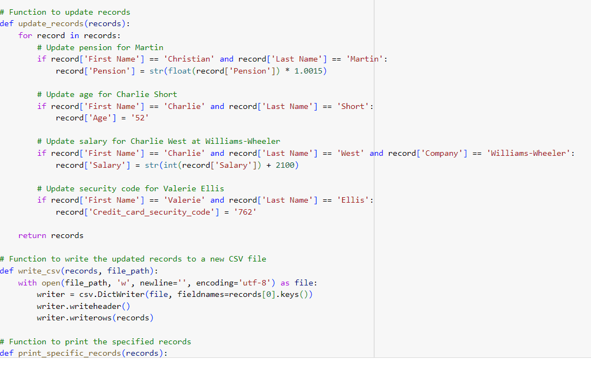In conclusion, the data transformation phase was a complex interplay of technical proficiency in Python and strategic data handling approaches. It involved not just the application of code but also the implementation of data management principles. The challenges encountered and the strategies employed to overcome them were a testament to the dynamic nature of data processing and the importance of a holistic understanding of both the technical and theoretical aspects of data handling. This phase, therefore, was not just a transformation of data but also an embodiment of the learnings and experiences gained from the module workshops, demonstrating the practical application of theoretical knowledge in real-world scenarios.
Data Loading Phase
The first step in data loading was to ascertain the structure and data types within the CSV file 'UpdatedTidyCleanedData.csv'. This crucial step involved using a Python script to read the CSV data and infer the data types for each column. The script functioned by examining each value and classifying it as an integer, float, boolean, date, or string. This careful analysis was essential for understanding the dataset's composition and preparing for its accurate and efficient loading into a database. The process also included previewing the first few records to ensure the data types were correctly inferred, laying a solid foundation for the subsequent loading pha
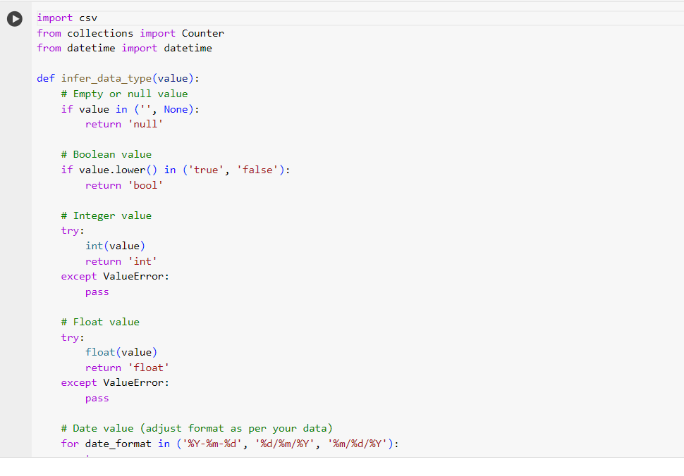 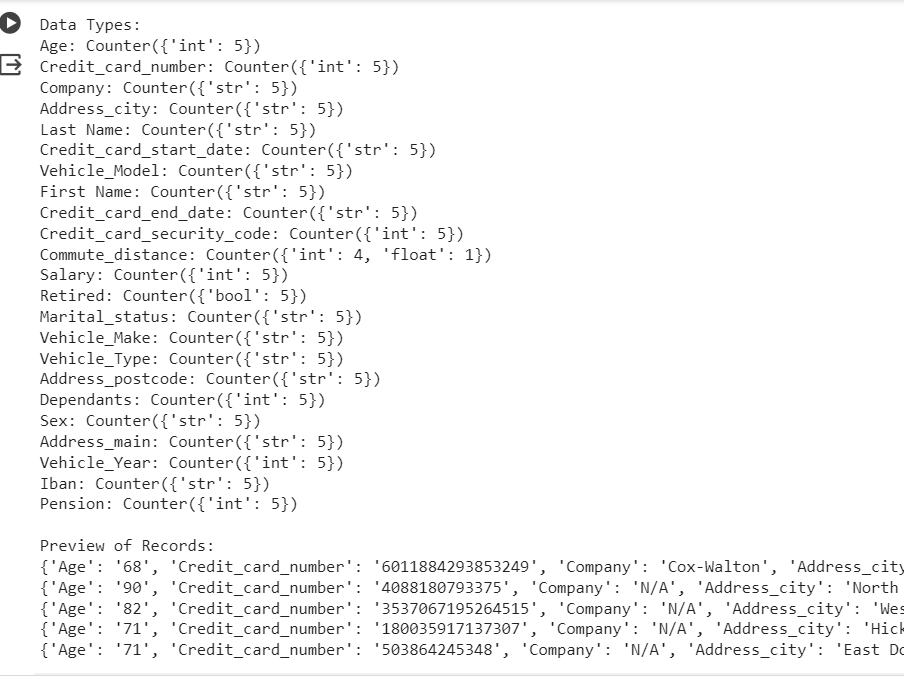The next step in the loading process was to reorganize the data and introduce a unique 'User_ID' for each record. This was achieved by writing a Python script to reformat the 'UpdatedTidyCleanedData.csv' file. The script generated a unique identifier for each user by combining the initials of their first and last names with a sequence number, enhancing the data's accessibility and individual record tracking. This reorganization facilitated a more structured and efficient database, aligning the data in a logical order and ensuring each record was distinct and easily identifiable. This modification was pivotal for subsequent data handling and analysis phases.
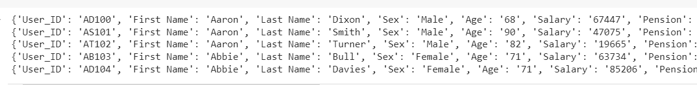The installation of Pony ORM and pymysql, achieved via the Python package manager pip, signifies a crucial step in the data loading process. Pony ORM is an object-relational mapper that provides a high-level abstraction over SQL databases, allowing for more intuitive interaction with the database using Python objects. The inclusion of pymysql, a library to connect Python with a MySQL database, indicates the intention to interface with MySQL, a widely-used database system. These installations lay the groundwork for integrating Python scripts with database operations, streamlining the process of storing and managing the processed data efficiently.
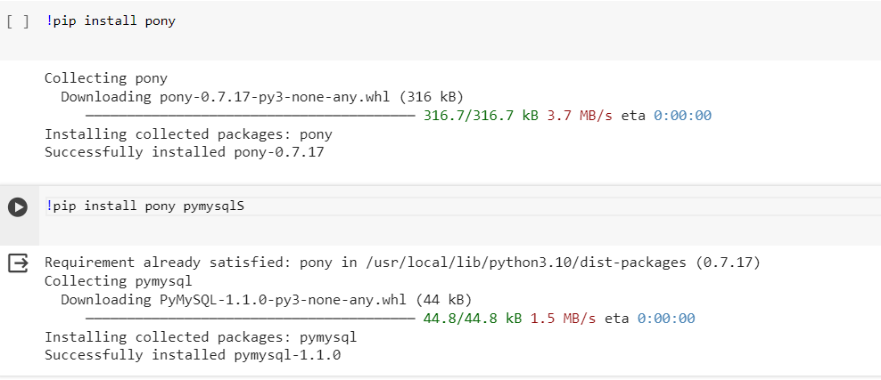The final stage of the loading process involved integrating the prepared data into a database using Pony ORM. This phase began with setting up the database schema within Pony ORM, defining classes for each entity like 'User', 'Financial', 'CreditCard', 'Vehicle', and 'Miscellaneous'. Each class was mapped to corresponding database tables with specified data types and relationships. The script then read data from 'ReorganizedData.csv', and for each row, it created or updated records in the database, ensuring data consistency and integrity. This step required careful handling of data types, such as converting strings to integers or floats where necessary. The effective use of Pony ORM's object-relational capabilities streamlined this process, successfully loading the transformed data into a structured database format.
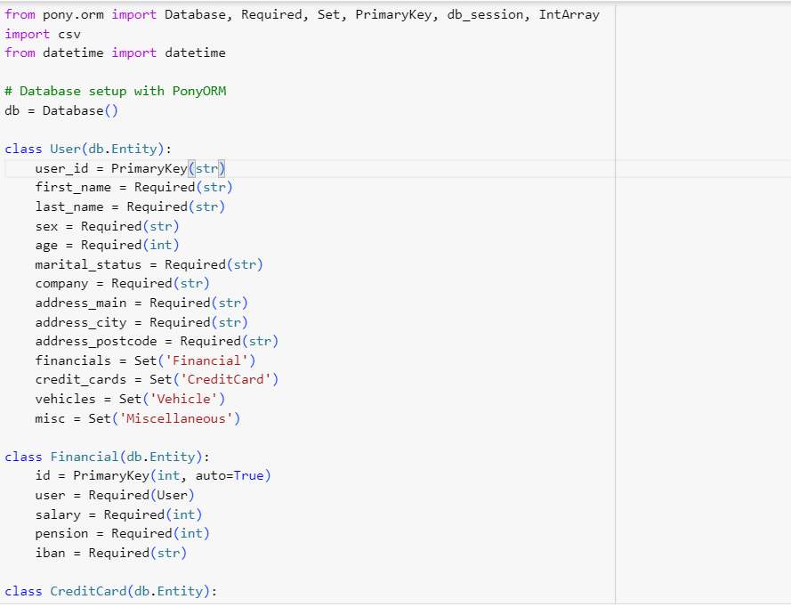During the data loading process into the database using Pony ORM, several challenges were encountered. One key challenge was ensuring the correct data types were used when transferring data from the CSV file to the database, as mismatches in data types could lead to errors or data loss. To resolve this, functions like 'safe_int' and 'safe_float' were employed to safely convert string values from the CSV file into appropriate numerical formats. Additionally, managing relational data and linking records correctly (e.g., linking financial records with the correct user) required careful scripting to maintain data integrity and relationships within the database.
Conclusion
The ETL process undertaken was a comprehensive and intricate journey, showcasing the importance of meticulous data handling and transformation in today's data-driven world. From extracting and standardizing data across multiple formats, through resolving complex data transformation challenges, to efficiently loading the processed data into a structured database, each step was crucial and interlinked. The process not only honed technical skills but also emphasized the importance of precision and strategic thinking in data management.
Regarding the ePortfolio, it serves as a reflective and detailed documentation of this entire ETL journey. It not only captures the technical aspects and methodologies applied at each stage but also integrates the learnings and insights gained from workshops and practical experiences. This ePortfolio stands as a testament to the skills and knowledge acquired, and the ability to apply theoretical concepts to real-world data challenges.